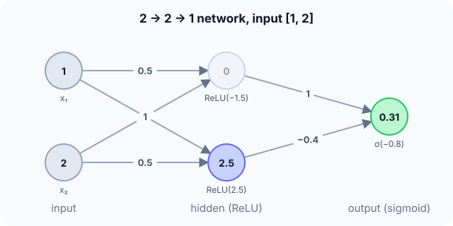

Prerequisites
- The artificial neuron.
- Activation functions (ReLU, sigmoid).
- Matrix–vector multiplication.
The analogy
Everyday analogy
Think of a company: front-line staff (the hidden neurons) each look at the raw facts and report a simple summary; the manager (the output neuron) combines those summaries into a decision.
Each hidden neuron learns its own useful feature, and the next layer builds on those features instead of on the raw input.
How it works
Network: 2 inputs → 2 hidden ReLU neurons → 1 sigmoid output. Hidden weights $W_1 = \begin{bmatrix} 0.5 & -1 \\ 1 & 0.5 \end{bmatrix}$, $b_1 = [0, 0.5]$; output weights $w_2 = [1, -0.4]$, $b_2 = 0.2$.
Start with one forward pass by hand
Input $x = [1, 2]$. Each row of $W_1$ belongs to one hidden neuron. Predict, then open "Check".
Example: predict before you read
Step 1. Hidden neuron 1: $0.5 \cdot 1 - 1 \cdot 2 + 0$. And neuron 2: $1 \cdot 1 + 0.5 \cdot 2 + 0.5$.
Check
$-1.5$ and $2.5$.
Step 2. Cover the next line and guess: apply ReLU to both.
Check
$h = [0, 2.5]$: the negative sum is cut to 0.
Step 3. Output neuron: $z = 1 \cdot 0 - 0.4 \cdot 2.5 + 0.2$, then sigmoid. Predict.
Check
$z = -0.8$; $\sigma(-0.8) \approx 0.31$. The network gives a 31% probability.

Quick recall: Before reading further, cover the text above and say out loud: what does "fully connected" mean?
Check your answer
Every neuron in one layer receives input from every neuron in the previous layer.
Finish the picture: why the hidden layer matters
XOR: output 1 when exactly one input is 1. A single neuron can't do it.
- Two hidden step-neurons: OR ($x_1 + x_2 - 0.5$) and AND ($x_1 + x_2 - 1.5$). Predict their outputs for the four inputs.
Check
OR: 0, 1, 1, 1. AND: 0, 0, 0, 1 (for 00, 01, 10, 11).
- Output neuron: OR − AND − 0.5, step. Predict the outputs.
Check
0, 1, 1, 0: exactly XOR. The hidden layer created new features (OR, AND) that make the problem linearly separable.
Quick recall: Without scrolling up, say out loud: how many parameters does the 2 → 2 → 1 network have?
Check your answer
9: $2 \times 2$ weights + 2 biases in the hidden layer, plus 2 weights + 1 bias at the output.
Full worked calculation
The page's 2 → 2 → 1 network with $W_1 = \begin{bmatrix} 0.5 & -1 \\ 1 & 0.5 \end{bmatrix}$, $b_1 = [0, 0.5]$, output weights $[1, -0.4]$, output bias $0.2$. Two inputs go through it neuron by neuron, then we see what the hidden ReLU actually contributes.
| Input $x$ | Hidden sums $z_1$ | Hidden outputs $h$ | Output sum $z_2$ | $\hat y = \sigma(z_2)$ | Class (≥ 0.5) |
|---|---|---|---|---|---|
| [1, 2] | [−1.5, 2.5] | [0, 2.5] | −0.8 | 0.310 | 0 |
| [2, 0] | [1, 2.5] | [1, 2.5] | 0.2 | 0.550 | 1 |
-
1Hidden neuron 1 for x = [1, 2]
$$z_{1,1} = 0.5 \cdot 1 + (-1) \cdot 2 + 0 = -1.5 \;\Rightarrow\; h_1 = \text{ReLU}(-1.5) = 0$$Row 1 of $W_1$ holds this neuron's weights. Its sum is negative, so ReLU switches it off: it contributes nothing for this input.
-
2Hidden neuron 2
$$z_{1,2} = 1 \cdot 1 + 0.5 \cdot 2 + 0.5 = 2.5 \;\Rightarrow\; h_2 = 2.5$$This neuron is active and passes its sum unchanged.
-
3Output neuron
$$z_2 = 1 \cdot 0 + (-0.4) \cdot 2.5 + 0.2 = -0.8, \qquad \hat y = \sigma(-0.8) = \frac{1}{1 + e^{0.8}} \approx 0.310$$The output neuron treats the hidden outputs as its inputs. Only hidden neuron 2 matters here, and its negative weight pulls the score down: 31%, so class 0.
-
4Second input x = [2, 0]
$$z_1 = [0.5 \cdot 2 - 1 \cdot 0 + 0,\; 1 \cdot 2 + 0.5 \cdot 0 + 0.5] = [1, 2.5], \quad z_2 = 1 - 1 + 0.2 = 0.2, \quad \hat y \approx 0.550$$Now both hidden neurons are active, and neuron 1's positive weight lifts the output above 0.5: class 1. Different inputs switch different hidden neurons on, which is how the network builds different "rules" for different regions.
-
5Count the parameters
$$\underbrace{2 \cdot 2 + 2}_{\text{layer 1}} + \underbrace{2 \cdot 1 + 1}_{\text{layer 2}} = 6 + 3 = 9$$Each fully connected layer has (inputs × outputs) weights plus one bias per output. Large MLPs have millions of these, computed by exactly the same rule.
-
6Without ReLU the hidden layer is useless
$$w_2^\top (W_1 x + b_1) + b_2 = [0.1, -1.2]\,x + 0 \;\Rightarrow\; x = [1, 2]: \; 0.1 - 2.4 = -2.3$$If the hidden layer had no activation, the two layers would collapse into one linear function, $[0.1, -1.2]\,x$, and the network could only draw straight boundaries. The ReLU zeroing $h_1$ is what changed the answer from −2.3 to −0.8.
What the numbers tell us
An MLP is neurons in layers: every hidden neuron sees all inputs, every output neuron sees all hidden outputs. Here [1, 2] → 0.31 (class 0) and [2, 0] → 0.55 (class 1).
The non-linear activation between layers is essential: it lets different neurons switch on for different inputs, so the network can represent curved boundaries such as XOR.
The rule in plain words
A layer computes $h = g(Wx + b)$: a weight matrix times the input, plus a bias vector, through an activation. Layers are stacked, each feeding the next.
Hidden layers use non-linear activations (ReLU); the output activation matches the task (sigmoid, softmax or linear).
Quick recall: Before you read the code, describe one dense layer in your own words. Then check below.
Check your answer
For each output neuron, start from its bias, add each input times the matching weight, then apply the activation.
The code
Read this code after you have done the forward pass by hand. It will make more sense.
void dense(double W[][2], double b[], double x[], int n_in, int n_out, int use_relu, double out[]) {
for (int i = 0; i < n_out; i++) { /* one output neuron per row of W */
double z = b[i];
for (int j = 0; j < n_in; j++) z += W[i][j] * x[j];
out[i] = use_relu && z < 0 ? 0 : z; /* ReLU, or linear */
}
}Definition
What you just did, in one line: a multi-layer perceptron is a feed-forward network of fully connected layers, each computing $g(Wx + b)$, with at least one hidden layer between input and output.
flowchart LR
I["input x (2)"] -->|"W1 x + b1, ReLU"| H["hidden h (2)"]
H -->|"w2 · h + b2, sigmoid"| O["output (1)"]
Putting numbers on it
Quick recall: Before looking at the formula, predict: how many weights does a dense layer from 784 inputs to 128 neurons have?
Check your answer
$784 \times 128 = 100{,}352$ weights, plus 128 biases.
Each layer is a matrix–vector product plus activation, and its parameter count follows directly:
$$h = \text{ReLU}(W_1 x + b_1), \quad \hat y = \sigma(w_2^\top h + b_2), \qquad \#\text{params of a layer} = n_{\text{in}} \cdot n_{\text{out}} + n_{\text{out}}$$| Layer | Shape | Parameters | Compute |
|---|---|---|---|
| Hidden (ours) | 2 → 2 | $2 \cdot 2 + 2 = 6$ | 4 multiply-adds |
| Output (ours) | 2 → 1 | $2 + 1 = 3$ | 2 multiply-adds |
| MNIST hidden layer | 784 → 128 | 100,480 | 100,352 multiply-adds |
| Any dense layer | $n_{\text{in}} \to n_{\text{out}}$ | $n_{\text{in}} n_{\text{out}} + n_{\text{out}}$ | $O(n_{\text{in}} n_{\text{out}})$ |
Warning
Dense layers on images explode in size: a 1000 × 1000 RGB image into just 100 neurons needs 300 million weights, and ignores the fact that nearby pixels belong together. That's why images use convolutional layers.
Exam tip
Count parameters layer by layer with $n_{\text{in}} \times n_{\text{out}} + n_{\text{out}}$, and show a forward pass as a sequence of $z$, activation, $z$, activation.
Common mistakes
- Forgetting the biases when counting parameters.
- Applying the hidden activation (ReLU) to the output of a classifier instead of sigmoid/softmax.
- Mixing up the shape of $W$: here each row belongs to one output neuron.
Try it yourself
Exercise 1 (warm-up)
Count the parameters of a network 4 → 8 → 3.
Hint
Two layers, each weights + biases.
Answer
$4 \cdot 8 + 8 = 40$ and $8 \cdot 3 + 3 = 27$: 67 parameters.
Exercise 2 (a bit harder)
Run the example network on $x = [2, 0]$. Write your answer down before you open it.
Show answer
Hidden sums: $0.5 \cdot 2 = 1$ and $1 \cdot 2 + 0.5 = 2.5$, so ReLU gives $[1, 2.5]$. Output $z = 1 - 1 + 0.2 = 0.2$, $\sigma(0.2) \approx 0.55$.
Did you know?
Did you know?
The universal approximation theorem (Cybenko 1989, Hornik 1991) says one hidden layer with enough neurons can approximate any continuous function, but it may need astronomically many; depth makes it far more efficient.
The feed-forward block inside every Transformer layer is a two-layer MLP applied to each token separately.
Key points to remember
If you remember one thing from each line, remember the because.
- Hidden layers learn new features because each neuron combines the inputs in its own way.
- An MLP can solve XOR because its hidden features make the classes linearly separable.
- Each layer has $n_{\text{in}} n_{\text{out}} + n_{\text{out}}$ parameters because every connection has a weight and every neuron a bias.
- Non-linear hidden activations are required because stacked linear layers collapse into one.
- Dense layers are costly on images because every pixel connects to every neuron.
Self-check questions
Answer these in order, out loud. They follow the page, so your answers become the script of your video.
- How is an MLP like a company with staff and a manager?
Sample answer
Staff (hidden neurons) each summarise the raw facts; the manager (output) combines their summaries into a decision.
- Do a forward pass of the 2 → 2 → 1 network on $x = [1, 2]$.
Sample answer
Hidden sums −1.5 and 2.5, ReLU gives [0, 2.5]; output $z = -0.8$, $\sigma(-0.8) \approx 0.31$.
- Why does
densestartzatb[i]inside the outer loop?A good answer says what each iteration computes.
Sample answer
Each outer iteration computes one neuron's sum, which starts from that neuron's own bias and then adds its weighted inputs.
- So what is a multi-layer perceptron, in one sentence?
Sample answer
A feed-forward network of fully connected layers with non-linear activations and at least one hidden layer.
- Why can an MLP solve XOR when one neuron can't?
A good answer uses the OR and AND hidden neurons.
Sample answer
The hidden layer computes new features, like OR and AND, in which XOR becomes linearly separable: OR minus AND.
- How many parameters does a dense layer have?
Sample answer
$n_{\text{in}} \cdot n_{\text{out}}$ weights plus $n_{\text{out}}$ biases.
- Why aren't MLPs used directly on large images?
Sample answer
Every pixel would connect to every neuron, giving huge numbers of weights and ignoring local structure; convolutional layers share small filters instead.
- If you had to teach this to a friend in 2 minutes, what would you leave out, and why?
Sample answer
I'd leave out the universal approximation theorem and the MNIST numbers. I'd keep the company analogy, the forward pass on [1, 2], and "layers of $g(Wx + b)$, hidden features solve XOR".
External resources
- 3Blue1Brown: Neural networks: layers, weights and biases, visually.
- TensorFlow Playground: train small MLPs in the browser and watch the hidden features.
- PyTorch docs: nn.Linear: the dense layer in practice.
Videos
- 3Blue1Brown: But what is a neural network?: builds an MLP for digit recognition.